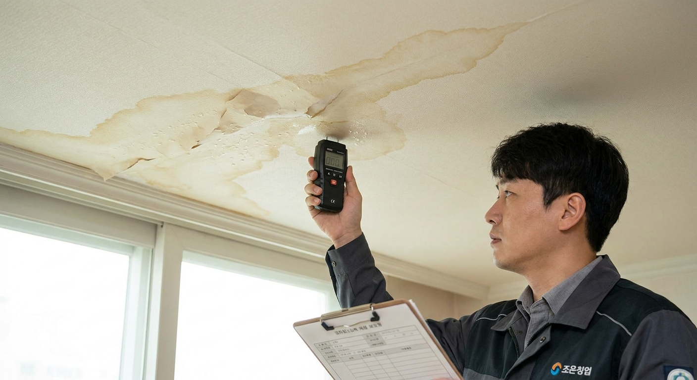
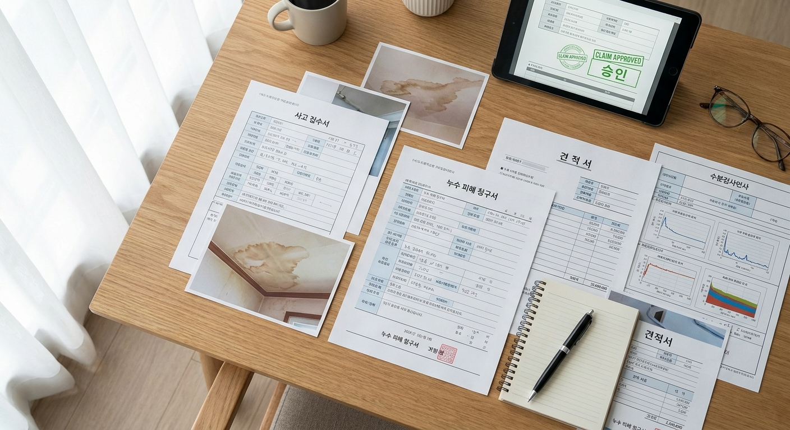

윗집 누수 피해 일상생활배상책임 보험 청구 방법 — 가해자·피해자별 보상 서류와 자기부담금 체크리스트
아파트나 빌라에서 천장 누수가 발생했을 때, 윗집 거주자가 가입한 '일상생활배상책임특약(일배책)'을 활용하면 아랫집의 도배·가구 피해 복구비용을 최대 1억 원 한도 내에서 실손 보상받을 수 있습니다.
단, 가입 시기(2020년 4월 개정 전후)에 따라 누수 대물 사고의 자기부담금이 20만 원에서 50만 원으로 상향되었으며, 윗집이 '실제 거주 중인 주택(증권상 기재 주소지)'이어야 보상 대상이 됩니다.
누수 원인이 된 윗집 자체 배관 수리비는 원칙적으로 보상 제외이나, 아랫집 피해 확산을 막기 위해 긴급히 지출한 '손해방지비용'으로 인정받을 경우 탐지비 및 방수공사비 일부를 보상받을 수 있습니다.

아파트 천장 누수 피해 현장에서 손해사정사가 피해 범위를 정밀 실측하는 모습 / AI 제작 이미지
01 | 일상생활배상책임보험(일배책)이란 무엇인가?
일상생활배상책임보험은 피보험자가 주거용으로 사용하는 주택의 소유·사용·관리 중 발생한 우연한 사고나, 일상생활 중 타인의 신체나 재물에 손해를 입혀 법률상 배상책임을 질 때 이를 보상해 주는 특약입니다.
단독 상품으로 가입하기보다는 실손의료비보험, 운전자보험, 종합건강보험, 화재보험 등에 월 몇백 원 수준의 특약 형태로 부가되어 있는 경우가 대부분입니다.
윗집 보일러 배관 파열, 화장실 방수층 균열, 세탁기 호스 탈락 등으로 인해 아랫집에 침수 피해를 주었을 때 가장 유용하게 활용되는 대표적인 생활 배상 담보입니다.
02 | 보상 가능 여부를 가르는 핵심 요건: 피보험자 거주와 증권 기재
누수가 발생했다고 해서 무조건 일배책으로 처리되는 것은 아닙니다. 금융감독원 표준약관에 따라 아래 3가지 요건을 엄격히 따집니다.
⚠️ 일배책 누수 보상 청구 전 필수 확인 요건
1. 보험 증권상 기재 주소지 일치: 누수가 발생한 윗집 주소가 보험 증권에 기재된 주소지와 정확히 일치해야 합니다. 이사 후 주소 변경을 알리지 않았다면 보상이 거절될 수 있습니다.
2. 자가 거주 여부(임대 주택 예외 확인): 과거에는 피보험자가 직접 거주하는 주택만 보장되었으나, 2020년 4월 약관 개정 이후 피보험자가 임대해 준 주택도 증권에 기재하고 별도 특약을 둔 경우 보상 가능하도록 범위가 조정되었습니다.
3. 우연한 사고 입증: 노후화를 인지하고도 방치한 고의·중과실이 아닌 배관의 우연한 파열이나 누수여야 합니다.
03 | 클릭 설계: 가입 시기별 자기부담금과 보상 한도 비교표
보험 약관 개정 시점에 따라 누수 사고에 적용되는 계약자 본인부담금이 크게 달라집니다. 본인의 보험 가입일을 반드시 확인하셔야 합니다.
| 가입 시점 구분 |
대물 배상 한도 |
일반 대물 자기부담금 |
누수 대물 사고 자기부담금 |
| 2009년 9월 이전 가입 |
최대 1억 원 |
2만 원 |
2만 원 (최고 조건) |
| 2009년 10월 ~ 2020년 3월 |
최대 1억 원 |
20만 원 |
20만 원 |
| 2020년 4월 이후 가입 |
최대 1억 원 |
20만 원 |
50만 원 (누수 사고 별도 상향) |
💡 가족 중 2명 이상 일배책에 가입되어 있다면? (중복 가입 꿀팁)
일배책은 실제 발생한 손해액만 비례 보상하는 '실손보상' 원칙이지만, 부부나 가족이 각각 일배책에 가입되어 있다면 비례분담 방식을 통해 자기부담금 20만~50만 원이 상쇄되어 전액 0원으로 면제되는 효과가 발생합니다. 가족들의 보험 증권을 모두 조회해 보세요!
04 | 내 집(윗집) 수리비도 보상될까? '손해방지비용'의 인정 범위
윗집 거주자들이 가장 억울해하는 부분은 "아랫집 수리비는 물어주면서 정작 물이 샌 내 집 방수 공사비는 왜 안 주느냐"는 점입니다.
원칙적으로 일배책은 '타인의 재물 손해'만 물어주는 보험이므로 윗집의 배관 교체비나 타일 복구비는 보상되지 않습니다.
그러나 대법원 판례와 상법 제680조에 따라 "아랫집의 피해가 더 커지는 것을 막기 위해 긴급하게 지출한 비용"은 '손해방지비용'으로 인정되어 보험사가 보상해야 합니다.
| 구분 |
항목 |
보험사 보상 인정 여부 |
판정 기준 및 근거 |
| 손해방지비용 (인정) |
전문 누수탐지비, 긴급 누수 차단 밸브 공사 |
보상 가능 (100% 또는 일부) |
추가 침수 피해를 막기 위한 필수적 선행 조치 |
| 아랫집 복구비 (인정) |
아랫집 천장·벽 도배, 석고보드 교체, 오염 가구 보상 |
보상 가능 (자기부담금 제외) |
민법상 불법행위 손해배상책임 대상 |
| 윗집 자체 수리 (불인정) |
윗집 화장실 전체 리모델링, 노후 배관 전체 교체 |
보상 불가 (면책) |
자기 재산의 가치 증진 및 본래 유지관리 책임 |

보험금 청구를 위해 꼼꼼하게 구비해야 하는 누수 피해 견적서 및 증빙 서류 일체 / AI 제작 이미지
05 | 클릭 설계 체크리스트: 피해자(아랫집) & 가해자(윗집) 입장별 필수 서류
보험 접수부터 보상금 지급까지 원활하게 진행하기 위해 각 입장에서 준비해야 하는 서류 목록입니다.
| 구분 |
필요 서류 및 증빙 목록 |
발급처 및 작성 요령 |
| 피해자 (아랫집) |
1. 피해 부위 사진 및 동영상 (근접 및 전체 화각)
2. 도배·인테리어 복구 견적서 (상세 내역)
3. 손상된 가구·가전 영수증 또는 감정 자료
4. 수리 완료 후 확인 사진 및 결제 영수증 |
피해 직후 원형 그대로 촬영 필수, 인테리어 업체 견적서에 부가세 명기 |
| 가해자 (윗집) |
1. 일배책 보험금 청구서 및 개인정보동의서
2. 주민등록등본 (사고 당시 거주 증빙)
3. 누수 원인 소견서 (배관 공사 업체 작성)
4. 공사 전·중·후 사진 및 공사비 영수증 |
주민센터 또는 정부24 발급, 누수 원인이 명확히 적힌 업체 기술소견서 필수 |
06 | 누수 발견 즉시 진행해야 하는 5단계 행동 요령
물이 새는 것을 발견한 즉시 아래 순서대로 신속하게 대처해야 분쟁을 예방하고 보험 처리가 매끄러워집니다.
🚨 누수 발생 시 골든타임 5단계 대처법
1. 즉각적인 증거 확보: 천장에서 물이 떨어지는 장면을 스마트폰 동영상과 사진으로 날짜가 나오게 촬영
2. 윗집 통보 및 수도 계량기 잠금: 윗집에 즉시 알리고, 추가 누수를 막기 위해 윗집 양수기함 계량기 밸브를 임시 차단
3. 전문 누수탐지 업체 섭외: 공압 테스트 및 열화상 카메라를 보유한 정식 등록 설비 업체 호출
4. 보험사 사고 접수: 윗집은 본인이 가입한 보험사에 '일상생활배상책임 사고 접수'를 진행하고 사고번호 수령
5. 손해사정사 현장 실사 및 합의: 보험사 지정 손해사정사가 아랫집을 방문하여 피해 범위를 확인한 후 복구비 지급 결정
07 | 보험금 지급 거절 시 분쟁 대응과 금감원 민원 요령
보험사에서 "단순 노후화로 인한 누수는 보상할 수 없다"거나 "손해방지비용을 한 푼도 인정할 수 없다"며 지급을 거절하는 경우가 있습니다.
이 경우 보험사의 일방적인 면책 통보서에 서명하지 마시고, 배관 파열의 우연성을 증명하는 설비 기사의 기술 소견서와 법원 판례(대법원 2002다60610 등)를 근거로 서면 재심사를 청구해야 합니다.
원만한 합의가 이루어지지 않을 때는 금융감독원 e-금융민원센터(국번없이 1332)를 통해 금융분쟁조정을 신청하면 객관적인 조정을 받을 수 있습니다.
08 | 세입자 거주 시 책임 소재: 집주인 vs 임차인
임대차 주택에서 누수가 발생했을 때 수리비와 배상 책임은 누구에게 있을까요?
민법 제623조에 따라 건물 외벽, 바닥 배관, 화장실 방수층 등 기본적인 주택 설비의 노후로 인한 누수는 집주인(임대인)이 전적으로 배상 책임을 집니다.
반면 세입자가 수도꼭지를 열어두고 외출했거나, 세탁기 배수관 결합 불량 등 세입자의 사용상 과실로 물이 넘쳤다면 세입자(임차인)가 본인의 일배책으로 배상해야 합니다.
09 | 일배책 누수 청구 핵심 FAQ
Q1. 아랫집에 피해를 준 뒤 뒤늦게 보험에 가입해도 소급 적용되나요?
A1. 절대 안 됩니다. 보험은 사고 발생 시점 이전에 유효하게 유지 중이어야 합니다. 사고 발생 후 가입하여 청구하는 행위는 보험사기방지특별법 위반에 해당합니다.
Q2. 아랫집 주민이 터무니없이 높은 합의금을 요구하면 어쩌죠?
A2. 윗집에서 직접 돈을 주지 마시고 보험사에 접수하여 손해사정사에게 감정을 맡기세요. 보험사는 법원 감정 기준과 실제 시세를 바탕으로 합리적인 원상복구 비용만을 산정하여 피해자에게 직접 지급합니다.
Q3. 일배책 청구하면 다음 해 자동차보험처럼 보험료가 할증되나요?
A3. 일상생활배상책임특약은 사고가 발생해 보험금을 지급받더라도 개인별 할증 제도가 없습니다. 보험료가 오르지 않으므로 안심하고 청구하셔도 됩니다.
#일상생활배상책임보험
#누수보험청구
#아파트누수책임
#일배책자기부담금
#누수손해방지비용
#아랫집천장누수
#누수탐지비용청구
#천장도배보상
#누수피해서류
#보험금지급거절대응